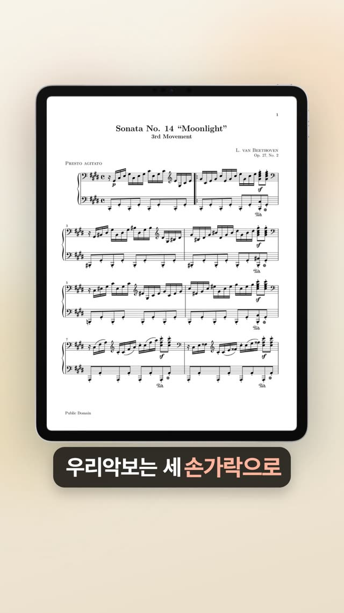
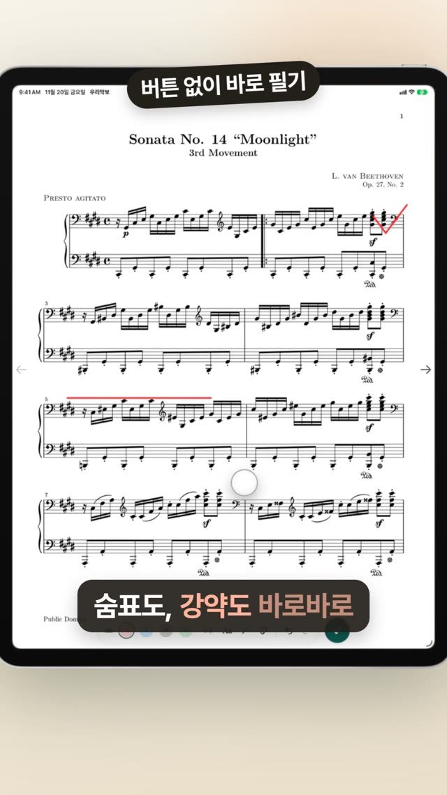

아이패드 악보에 바로 필기하기: 세 손가락 탭
연습하다가 숨표나 강약을 적어 두고 싶은 순간이 있습니다. 그때 펜 버튼을 찾느라 손이 멈추면 흐름이 끊깁니다. 우리악보는 이 과정을 탭 한 번으로 줄였습니다.
사용법
1. 세 손가락으로 한 번 탭하기
악보를 보는 화면 아무 곳이나 세 손가락으로 한 번 탭합니다. 화면 아래에 펜, 색, 음악 기호 도구가 바로 나타납니다.

2. 악보 위에 적기
Apple Pencil이나 손가락으로 필요한 마디에 표시합니다. 색을 바꾸거나 지우개로 고칠 수 있습니다.

3. 다시 탭해서 연주로 돌아가기
세 손가락으로 한 번 더 탭하면 도구가 사라지고 악보 보기로 돌아갑니다. 적어 둔 표시는 그대로 남습니다.
화면은 시뮬레이터에서 실제 앱을 조작해 녹화한 것입니다. 손가락 표시는 누른 위치를 보여 주는 그래픽입니다.